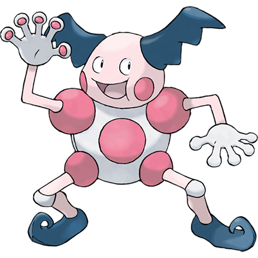

Hurray! You've saved Mr. Mime!
He bows repeatedly and gives you this Progress Badge.

Players, just like students, need to be able to see their progress. How much have they completed and how much remains to accomplish their goal? Incorporating game mechanics such as gaining experience points to level up, earning badges, and collecting puzzle pieces all serve to show players not only how far they have to go, but also how far they've come. It's not always about what students lack, but what they've gained and how much they've grown. Using these visible indicators can be very motivating.
Creating leaderboards can bring a competitive flavor to making progress. In addition to knowing how they're faring relative to the overall goal, players know how they stack up against their peers and may be encouraged to practice and improve in order to rank higher.